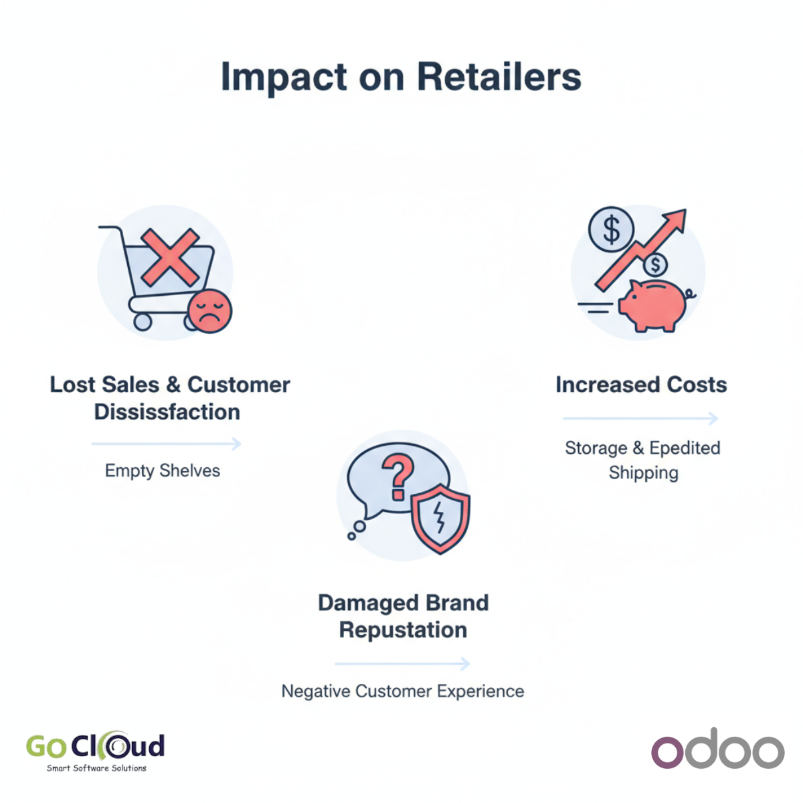
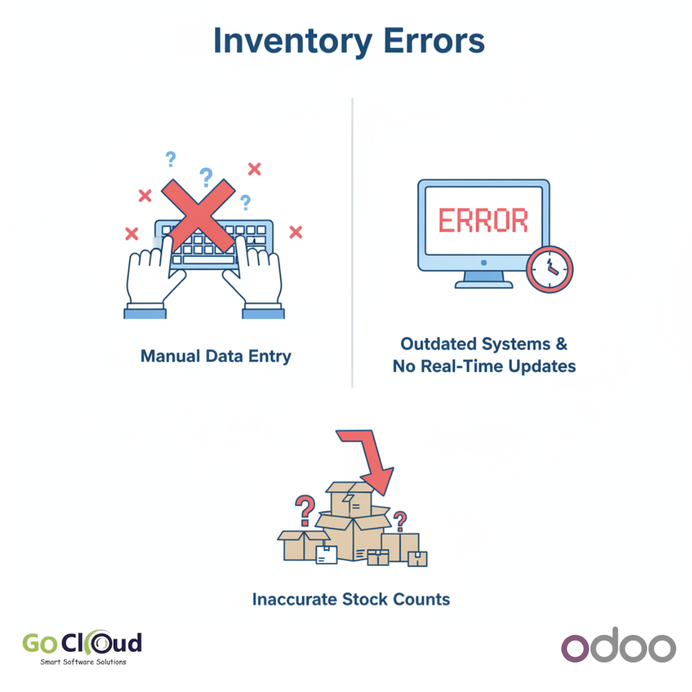

من أكثر المشكلات التي تُربك الإدارة في شركات التجارة والتوزيع أن تقول التقارير إن المنتج متاح للبيع، بينما يؤكد المستودع أنه غير موجود فعلياً. هذا التضارب لا يسبب فقط تأخيراً في التسليم أو توتراً بين فرق العمل، بل يضرب ثقة الإدارة في النظام نفسه. والسؤال الذي يتكرر هنا: هل المشكلة في Odoo أو في أي نظام ERP؟ أم أن السبب الحقيقي أعمق من ذلك؟
الإجابة التي نراها مراراً في المشاريع الواقعية هي أن المشكلة لا تبدأ من البرنامج، بل من اختلاف الإجراءات التشغيلية بين الفروع والإدارات. وعندما تدخل هذه الفروقات إلى النظام، تظهر النتائج على شكل أرقام متناقضة بين المبيعات والمخزون.
كيف تبدأ الأزمة داخل شركات التجارة والتوزيع؟
في كثير من الشركات، لا تُنفذ نفس العملية بنفس الطريقة في كل فرع. فرع يسجل التحويل بين المستودعات فوراً، وفرع آخر يؤجله لنهاية اليوم. مندوب يحجز البضاعة داخل النظام، وآخر يعد العميل شفهياً خارج النظام. فريق يعالج المرتجعات بخطوات واضحة، وفريق آخر يعتمد على اجتهادات سريعة. النتيجة النهائية واحدة: النظام يسجل ما تم إدخاله، لكن الواقع التشغيلي يسير بطريقة مختلفة.
عندما يحدث هذا، تبدأ المشكلات في الظهور بشكل متتابع:
- تأخير تسليم الطلبات لأن المبيعات تعتمد على رصيد غير دقيق.
- اختلاف الجرد بين النظام والواقع داخل المستودع.
- نزاعات داخلية بين المبيعات والمخزون والعمليات.
- تقارير غير موثوقة تجعل الإدارة تتردد في اتخاذ القرار.
- زيادة الوقت الضائع في المراجعات اليدوية والتسويات.
السبب الحقيقي: تعدد طرق العمل وليس ضعف النظام
نجاح تطبيق Odoo في شركات التجارة والتوزيع لا يعتمد فقط على تركيب النظام، بل على توحيد الطريقة التي تعمل بها الشركة. إذا كانت هناك أكثر من طريقة لتنفيذ نفس العملية، فإن أي ERP سيعكس هذا الاضطراب. لذلك فإن السؤال الأدق ليس: لماذا أخطأ النظام؟ بل: هل قمنا بتصميم دورة عمل موحدة قبل التشغيل؟
في المشاريع الناجحة، نكتشف غالباً أن جذور الأزمة تعود إلى واحدة أو أكثر من النقاط التالية:
- عدم وجود Workflow موحد للمبيعات والمخزون والتحويلات.
- ضعف الانضباط في توقيت التسجيل بين الفروع المختلفة.
- تنفيذ عمليات حساسة خارج النظام مثل الحجز أو إرجاع البضائع أو تعديل الكميات.
- صلاحيات واسعة أكثر من اللازم تسمح بتجاوز الخطوات المعتمدة.
- نقص التدريب الذي يجعل المستخدمين يعودون إلى الطرق القديمة.

كيف يعالج Odoo المشكلة بشكل صحيح؟
القيمة الحقيقية في Odoo ليست فقط في تسجيل الحركة، بل في قدرته على فرض مسار تشغيلي واضح يربط الإدارات ببعضها ويقلل الاجتهادات الفردية. لكن ذلك يتطلب تنفيذاً صحيحاً يبدأ من تحليل العمليات، لا من إضافة تعديلات برمجية معقدة منذ اليوم الأول.
1. توحيد دورة العمل بين الفروع
الخطوة الأولى هي تصميم Workflow واضح للمبيعات والمخزون والتحويلات والمرتجعات، ثم إلزام جميع الفروع به. عندما تتوحد الطريقة، تتوحد الأرقام تلقائياً ويصبح أي انحراف قابلاً للمراجعة فوراً.
2. تفعيل الحجز التلقائي للمخزون
بدلاً من الاعتماد على الحجز الشفهي أو الوعود غير المسجلة، يسمح Odoo بحجز الكميات تلقائياً بمجرد تأكيد أمر البيع وفقاً للسياسات المعتمدة. هذا يقلل التضارب بين ما يراه فريق المبيعات وما يراه المستودع.
3. ضبط صلاحيات المستخدمين
من أهم أسباب الفوضى أن يتمكن عدد كبير من المستخدمين من تنفيذ خطوات حساسة خارج المسار المعتمد. عندما تضبط الصلاحيات ويصبح لكل خطوة مسؤول واضح، تقل الأخطاء ويتحسن الالتزام بالإجراءات.
4. تتبع التحويلات بين المستودعات لحظياً
في شركات التوزيع متعددة الفروع، التحويلات غير المنضبطة واحدة من أكثر أسباب اختلاف المخزون. Odoo يوفر مراحل واضحة للتحويل، من الطلب إلى الشحن إلى الاستلام، مع رؤية مباشرة للحالة الحالية لكل حركة.
5. توحيد سياسة المرتجعات والاستبدال
إذا كانت المرتجعات تُعالج بطرق مختلفة، فستتضرر دقة المخزون حتى لو كانت عمليات البيع نفسها منضبطة. لذلك يجب تصميم سياسة موحدة داخل النظام توضح متى تُقبل المرتجعات، وكيف تُفحص، وأين تُسجل.
6. تدريب الفرق على الواقع الجديد وليس على الشاشات فقط
كثير من المشاريع تركز على شرح الشاشات وتنسى شرح المنطق التشغيلي خلفها. التدريب الفعال يجب أن يجيب عن سؤال واحد: كيف أصبح الموظف ينفذ عمله اليومي داخل النظام خطوة بخطوة؟ عندما يفهم الفريق السبب، يصبح الالتزام أسهل.

ما النتائج التي يمكن أن تحققها الشركة بعد المعالجة؟
عندما يتم تطبيق Odoo بهذه المنهجية، تتحول النتائج من مجرد نظام جديد إلى تحسن تشغيلي واضح:
- رفع دقة المخزون وتقليل الفروقات بين النظام والواقع.
- تسريع تنفيذ الطلبات لأن فرق المبيعات تعمل على أرقام موثوقة.
- تقليل النزاعات بين الإدارات بوجود مصدر واحد للحقيقة.
- تحسين التخطيط الشرائي بفضل بيانات أكثر دقة.
- زيادة ثقة الإدارة في التقارير واتخاذ القرار على أساس صحيح.
متى تكون المشكلة مؤشراً خطيراً؟
إذا كانت شركتك تعاني باستمرار من بيع منتجات غير متاحة، أو تأخر التحويلات بين الفروع، أو كثرة التسويات اليدوية، أو شكاوى متكررة بين المبيعات والمخزون، فهذه ليست تفاصيل صغيرة. إنها إشارة واضحة إلى أن دورة العمل تحتاج إلى إعادة تصميم قبل أن تحتاج إلى مزيد من البرمجة.
الخلاصة
اختلاف أرقام المبيعات عن المخزون في شركات التجارة والتوزيع ليس مجرد خطأ تقني، بل غالباً علامة على وجود خلل في الإجراءات التشغيلية. Odoo يستطيع معالجة هذه المشكلة بكفاءة عالية، لكن بشرط أن يتم تطبيقه كأداة لتنظيم العمل وتوحيده، لا كواجهة جديدة فوق الفوضى القديمة.
إذا كنت تريد قراءة مرتبطة بهذا الموضوع، يمكنك الاطلاع على مقالنا عن تحسين سلسلة التوريد باستخدام Odoo. وإذا كانت شركتك تواجه فجوة بين المخزون والمبيعات أو تحتاج إلى إعادة تصميم Workflow عملي يناسب الواقع التشغيلي، فإن فريق GoCloud يمكنه مساعدتك في تحليل الوضع الحالي وبناء تنفيذ أكثر دقة واستقراراً.